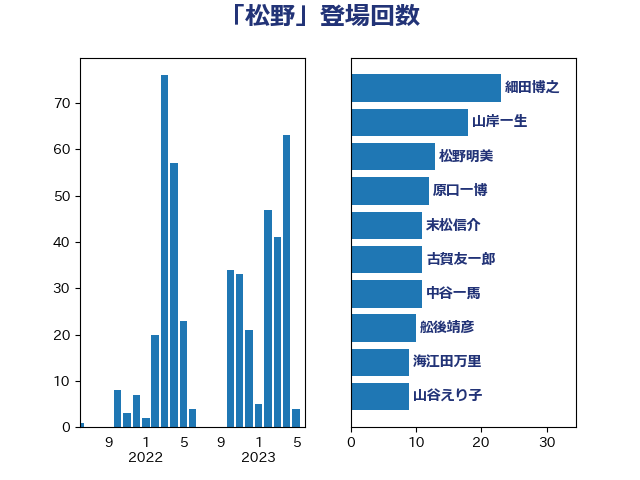

単語「松野」

| 細田博之 | 自由民主党 | 15 回 |
| 山谷えり子 | 自由民主党 | 7 回 |
| 石川大我 | 立憲民主党 | 7 回 |
| 舩後靖彦 | れいわ新選組 | 7 回 |
| 上野賢一郎 | 自由民主党 | 6 回 |
| 山本順三 | 自由民主党 | 5 回 |
| 末松信介 | 自由民主党 | 5 回 |
| 足立康史 | 日本維新の会 | 5 回 |
| 東徹 | 日本維新の会 | 4 回 |
| 浜田聡 | NHK党 | 4 回 |
| 海江田万里 | 立憲民主党 | 4 回 |
| 笠井亮 | 日本共産党 | 4 回 |
| たがや亮 | れいわ新選組 | 3 回 |
| 塩川鉄也 | 日本共産党 | 3 回 |
| 大串博志 | 立憲民主党 | 3 回 |
| 松村祥史 | 自由民主党 | 3 回 |
| 松野博一 | 自由民主党 | 3 回 |
| 林芳正 | 自由民主党 | 3 回 |
| 梅村みずほ | 日本維新の会 | 3 回 |
| 鈴木庸介 | 立憲民主党 | 3 回 |
| 高木毅 | 自由民主党 | 3 回 |
| 勝部賢志 | 立憲民主党 | 2 回 |
| 吉田とも代 | 日本維新の会 | 2 回 |
| 太栄志 | 立憲民主党 | 2 回 |
| 市村浩一郎 | 日本維新の会 | 2 回 |
| 木原誠二 | 自由民主党 | 2 回 |
| 杉尾秀哉 | 立憲民主党 | 2 回 |
| 杉本和巳 | 日本維新の会 | 2 回 |
| 松原仁 | 立憲民主党 | 2 回 |
| 浅川義治 | 日本維新の会 | 2 回 |
| 磯崎仁彦 | 自由民主党 | 2 回 |
| 空本誠喜 | 日本維新の会 | 2 回 |
| 美延映夫 | 日本維新の会 | 2 回 |
| 羽田次郎 | 立憲民主党 | 2 回 |
| 赤池誠章 | 自由民主党 | 2 回 |
| 野間健 | 立憲民主党 | 2 回 |
| 長島昭久 | 自由民主党 | 2 回 |
| 中島克仁 | 立憲民主党 | 1 回 |
| 井上哲士 | 日本共産党 | 1 回 |
| 伊藤孝恵 | 国民民主党 | 1 回 |
| 古川禎久 | 自由民主党 | 1 回 |
| 吉川元 | 立憲民主党 | 1 回 |
| 吉田宣弘 | 公明党 | 1 回 |
| 和田政宗 | 自由民主党 | 1 回 |
| 大島敦 | 立憲民主党 | 1 回 |
| 宮路拓馬 | 自由民主党 | 1 回 |
| 寺田学 | 立憲民主党 | 1 回 |
| 山下芳生 | 日本共産党 | 1 回 |
| 山岸一生 | 立憲民主党 | 1 回 |
| 山田勝彦 | 立憲民主党 | 1 回 |
| 岩渕友 | 日本共産党 | 1 回 |
| 岸信夫 | 自由民主党 | 1 回 |
| 島尻安伊子 | 自由民主党 | 1 回 |
| 川田龍平 | 立憲民主党 | 1 回 |
| 徳永久志 | 立憲民主党 | 1 回 |
| 本田顕子 | 自由民主党 | 1 回 |
| 梅谷守 | 立憲民主党 | 1 回 |
| 水岡俊一 | 立憲民主党 | 1 回 |
| 江渡聡徳 | 自由民主党 | 1 回 |
| 江田憲司 | 立憲民主党 | 1 回 |
| 浅田均 | 日本維新の会 | 1 回 |
| 熊谷裕人 | 立憲民主党 | 1 回 |
| 田村智子 | 日本共産党 | 1 回 |
| 田村貴昭 | 日本共産党 | 1 回 |
| 田畑裕明 | 自由民主党 | 1 回 |
| 石垣のりこ | 立憲民主党 | 1 回 |
| 福山哲郎 | 立憲民主党 | 1 回 |
| 稲津久 | 公明党 | 1 回 |
| 穀田恵二 | 日本共産党 | 1 回 |
| 竹内真二 | 公明党 | 1 回 |
| 緒方林太郎 | 無所属 | 1 回 |
| 藤川政人 | 自由民主党 | 1 回 |
| 谷合正明 | 公明党 | 1 回 |
| 金子恭之 | 自由民主党 | 1 回 |
| 鎌田さゆり | 立憲民主党 | 1 回 |
| 阿達雅志 | 自由民主党 | 1 回 |
| 須藤元気 | 無所属 | 1 回 |
| 高橋光男 | 公明党 | 1 回 |